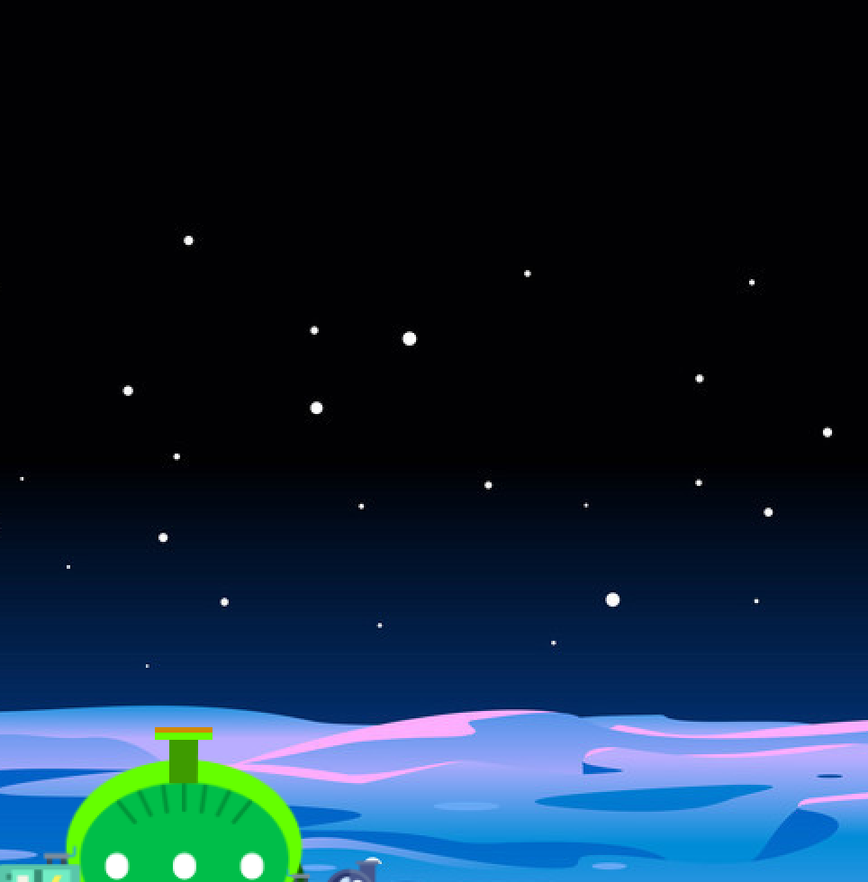

The project's primary purpose was to help us create a controller and understand what it takes to make systems that has analogue inputs and digital outputs using sensors.
We were given the flexibility to create a whole new project however we were also recommended to try and expand the first project. The idea was to create a controlling systems that can help enhance the experience of the unit.
The 1st project had just a simple interaction of an object moving. For the second project the idea was to make this into a game. The planet moves and a shooter fires at the planet.
The first step of the project was to create the whole system interaction. I started out by creating simple designs of the controller and how someone should use it. What might be the form factor, how will the user use it, what kind of affordances must be there - multiple iterations were made in order to explore the form factor. In order to move the shooter, using a potentiometer seemed well as it had the same link of a physical movement. For the shooter, a trigger design seemed best as it would make it look like a shooting unit.
The next part of the assignment entailed converting the processing sketch from the previous planning project to the new one which can read the values from the Arduino Uno board. The major code change was to make the the rectangle or the shooter movie based on the arc determined by the potentiometer and on click the star has to be shot. The code that represents that interaction is provided below.
However, in the process of making the system we ran into issues with using the translation value of the potentiometer to fire the star. It became a very complicated set to use those arguments as its vectors and mapping those to objects was needed which I was not very aware of. This gave the opportunity to redesign the system. As conceptually I was able to understand how to do it, I then made the design such a way that it moves along the Y axis and shoots the Bullet. Once the system was placed it was a matter of creating the physical shell that will hold the adreno board. Once the physical controller was made and once the processing sketch was working to a certain extent the last step was to define the aesthetics and make it look like a shooting game. The evolution of the project as shown below. I also created an alien shooter on Illustrator and used it as the shooter object.
The progress is shown below.